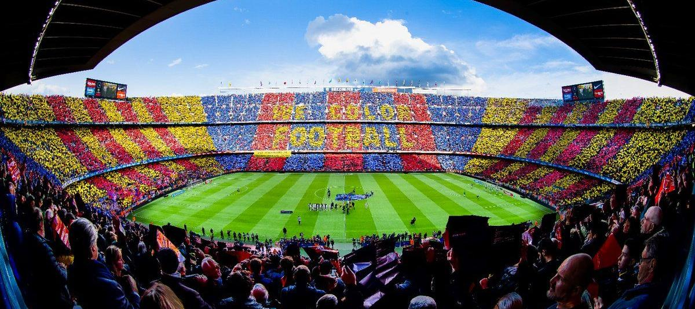
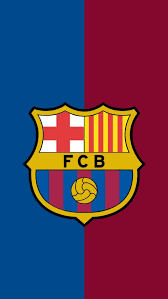
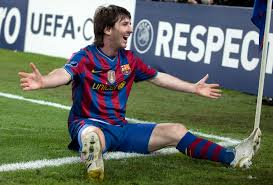
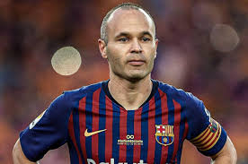
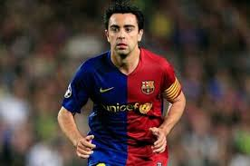

El FC Barcelona es uno de los clubes más exitosos y queridos del mundo. Con una historia rica en títulos y jugadores legendarios, representa mucho más que fútbol: representa pasión, identidad y excelencia.


El mejor jugador de la historia del Barça. Goleador histórico, ídolo eterno y símbolo del club.

Genio del mediocampo, protagonista de grandes noches europeas y mundialista con España.

Arquitecto del juego del Barça y pilar fundamental del estilo tiki-taka.
Únete a la pasión azulgrana y vive el fútbol con el corazón. Explora más sobre el club y su historia.